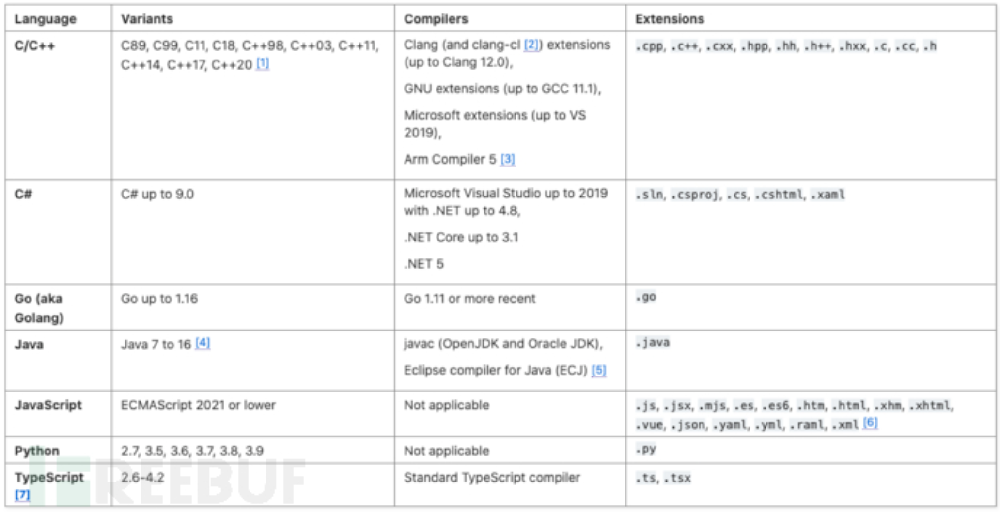
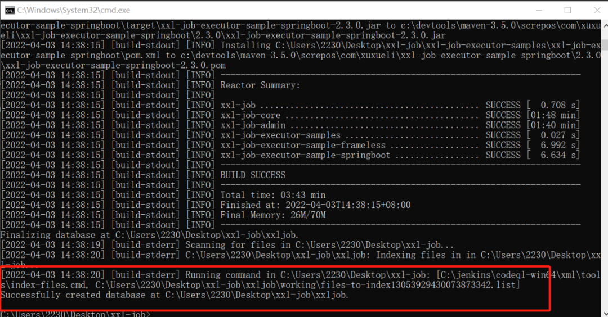

CodeQL安装与使用
CodeQL使用
CodeQL简介
Github为了解决其托管的海量项目的安全性问题，收购了CodeQL的创业公司，并宣布开源CodeQL的规则
部分，这样全世界的安全工程师就可以贡献高效的QL审计规则给Github，帮助它解决托管项目的安全问题。
对于安全工程师，也就多了一个非商业的开源代码自动化审计工具。
CodeQL支持非常多的语言，在官网有如下支持的语言和框架列表。

CodeQL原理
代码转化成类似数据库的形式，并基于该database进行分析。
在 CodeQL 中，代码被视为数据。安全漏洞、Bug 和其他错误被建模为可针对从代码中提取的数据库执行的查询。
CodeQL 的整体思路是把源代码转化成一个可查询的数据库，通过 Extractor 模块对源代码工程进行关键信息分析提取，构成一个关系型数据库。CodeQL
的数据库并没有使用现有的数据库技术，而是一套基于文件的自己的实现。
对于编译型语言，Extractor 会监控编译过程，编译器每处理一个源代码文件，它都会收集源代码的相关信息，如：语法信息（AST
抽象语法树）、语意信息（名称绑定、类型信息、运算操作等），控制流、数据流等，同时也会复制一份源代码文件。而对于解释性语言，Extractor
则直接分析源代码，得到类似的相关信息。
关键信息提取完成后，所有分析所需的数据都会导入一个文件夹，这个就是 CodeQL database, 其中包括了源代码文件、关系数据、语言相关的
database schema（schema 定义了数据之间的相互关系）。
CodeQL安装
CodeQL本身包含两部分 解析引擎 + SDK 。
解析引擎：不开源，解析我们编写的规则，但是可以直接在官网下载二进制文件直接使用。
SDK：完全开源，里面包含大部分现成的漏洞规则，我们也可以利用其编写自定义规则。
解析引擎安装
URL: https://github.com/github/codeql-cli-binaries/releases
下载已经编译好的codeql执行程序，解压之后把codeql文件夹放入～/CodeQL。
为了方便测试我们需要把ql可执行程序加入到环境变量当中：
1 | export PATH=/Home/CodeQL/codeql:$PATH |
检验：命令行输入codeql，出现如下内容就表示引擎设置完成。

SDK安装
我们使用Git下载QL语言工具包，也放入～/CodeQL文件夹。
1 | git clone https://github.com/github/codeql.git |
这样在～/CodeQL目录下就包含了2个文件夹，引擎文件夹(codeql)和SDK文件夹(ql)。
1 | ➜ CodeQL ls |
VSCode开发插件安装
CodeQL需要使用Visual Studio Code来开发和调试规则，所以我们需要在VSCode上面安装CodeQL的插件。
我们安装好Visual Studio Code后，在它的扩展里面搜索codeql, 点击安装。

然后我们配置一下上面我们安装的codeql引擎路径。

到此，我们就设置好了CodeQL的开发环境。
生成数据库
本地生成
1 | codeql database create 数据库名 --language=cpp --source-root=源码路径 |
比如现在要对xxl-job这个项目进行漏洞扫描
下载项目源码并进入该目录
1 | #下载源代码 |
主要参数：
- –language 要根据具体项目的编译语言指定
- –command 参数如果不指定，会使用默认的编译命令和参数
- –source-root 源码路径
- –overwrite 表示 create 的目标 database 对已有的 database 做覆盖
–language 对应关系如下：
| Language | Identity |
|---|---|
| C/C++ | cpp |
| C# | csharp |
| Go | go |
| Java | java |
| javascript/Typescript | javascript |
| Python | python |
–command 中指定的脚本的要求：
- Confirm that there is some source code for the specified language in the project.
- For codebases written in Go, JavaScript, TypeScript, and Python, do not specify an explicit –command.
- For other languages, the –command must specify a “clean” build which compiles all the source code files without
reusing existing build artefacts. 即如果项目中原本有任何编译产生的临时或最终文件，都需要删除，一定保证编译过程完全“
clean ”。
如某个项目的 build.sh：
1 | rm -r build && mkdir build |
成功生成：
线上生成
1 | ps:适合不需要打包的如python等 |
1.输入链接,点击follow生成

2.生成完成后点击下方进入下载到本地


进行项目漏洞扫描
VSCode
主要参考
在 VSCode 打开扫描规则 CodeQL libraries and queries（ql），并保存工作区（文件 —> 工作区另存）
VSCode 添加数据库
打开工作区，选择要使用的扫描 CodeQL RUN Query

执行规则扫描
选择具体语言的规则进行扫描，例如：java语言的规则。
ql后缀的文件是规则扫描文件
1 | Eg: CodeQL\ql\cpp\ql\src\Security |
点击 CodeQL:Run Queries in Selected Files 后，弹出一个对话框，选择Yes；即可执行扫描操作。
PS：可以一次选择一条或者多条规则就行扫描；但是一次性不能超过 20 条规则。
- 结果查看

命令行方法
1 | #创建数据库 |
- codeql-repo/java ：java 扫描规则
- –format：结果输出格式
- –output：结果文件输出路径
ql语言学习
CodeQL语法
CodeQL的核心引擎是不开源的
这个核心引擎的作用之一是帮助我们把 micro-service-seclab 转换成 CodeQL 能识别的中间层数据库。
由于CodeQL开源了所有的规则和规则库部分，所以我们能够做的就是编写符合我们业务逻辑的QL规则，然后使用CodeQL引擎去跑我们的规则。

注释
在使用命令行解析或vscode的时候，必须包含以下两个注释:
（参考 https://github.com/github/codeql/blob/main/docs/query-metadata-style-guide.md）
https://codeql.github.com/docs/writing-codeql-queries/introduction-to-ql/
@kind
定义查询的类型，可以定义的类型为以下3个
- problem：必须两列或其倍列，结构：element,string
- path-problem：必须包含四列，结构：element, source, sink, string，后续查询必须以element,string结构
- metric
@id
定义该查询的唯一标识，应以语言为开头，支持的语言如下：
- C and C++:
cpp - C#:
cs - Go:
go - Java:
java - JavaScript and TypeScript:
js - Python:
py
后面建议接上一个该查询所针对的问题，比如
@id cs/command-line-injection@id java/string-concatenation-in-loop
语句
| Query part | Purpose | Details |
|---|---|---|
| import java | 导入标准Code | 每个查询语言以一个或多个import开始 |
| from MethodAccess methodAcces | 定义查询的变量，格式如下： |
这里定义MethodAccess 类型的变量 |
| where methodAccess.getMethod().hasName(“lookup”) and methodAccess.getMethod().getDeclaringType().hasQualifiedName(“javax.naming”, “Context”) | 定义变量的条件 | 定义methodAcces的方法名为lookup，调用该方法的类为javax.naming.Context |
| select methodAccess,methodAccess.getCaller().getName() | 定义匹配后结果数据 | 返回方法执行参数以及方法名 |
CodeQL的查询语法类似SQL：
1 | from [datatype] var |
Eg: 在所有的整形数字i中，当i==1的时候，输出i
1 | import |